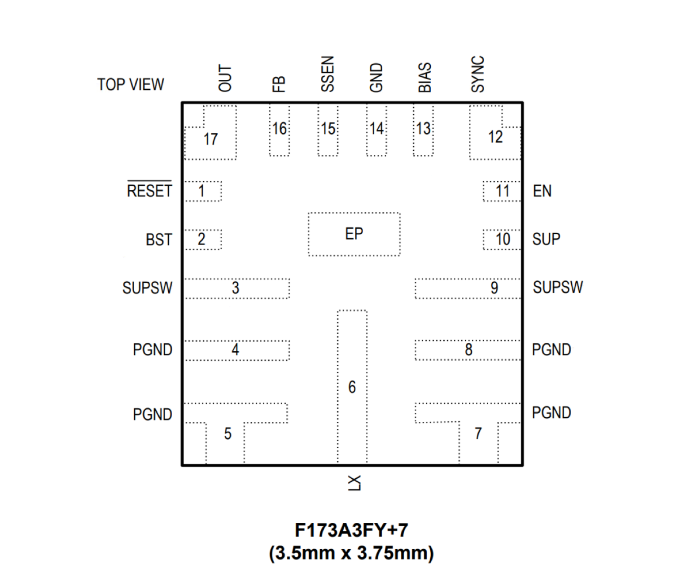

MAX20004E / MAX20006E / MAX20008E

Pin Description
| PIN | NAME | FUNCTION |
|---|---|---|
| 1 | RESET | Open-Drain RESET Output. To obtain a logic signal, pull RESET up with an external resistor. |
| 2 | BST | High-Side Driver Supply. Connect a 0.1μF capacitor between LX and BST for proper operation. |
| 3 | SUPSW | Supply Input. |
| 4, 5 | PGND | Power Ground. Connect all PGND pins together. |
| 6 | LX | Inductor Connection. Connect LX to the switched side of the inductor. Connect all LX pins together. |
| 7, 8 | PGND | Power Ground. Connect all PGND pins together. |
| 9 | SUPSW | Internal High-Side Switch Supply Input. SUPSW provides power to the internal switch. Bypass SUPSW to PGND with 0.1μF and 4.7μF ceramic capacitors. Place the 0.1μF as close to the SUPSW and PGND pins as possible, followed by the 4.7μF capacitor |
| 10 | SUP | Voltage Supply Input. SUP powers up the internal linear regulator. SUP is fused directly to SUPSW, so it must be connected directly to SUPSW as close to the IC as possible |
| 11 | EN | SUP Voltage-Compatible Enable Input. Drive EN low to disable the devices. Drive EN high to enable the devices |
| 12 | SYNC | Synchronization Input. Connect SYNC to GND to enable skip-mode operation under light loads. Connect SYNC to BIAS or an external clock to enable fixed-frequency forced-PWM-mode operation. When driving SYNC externally do not exceed the BIAS voltage. The BIAS pin may transition from 5V to the output voltage after startup to increase efficiency. For MAX20006EAFOD/ VY+, do not ground SYNC pin, as the part only supports FPWM mode. |
| 13 | BIAS | Linear Regulator Output. BIAS powers up the internal circuitry. Bypass with a minimum 2.2μF ceramic capacitor to ground. |
| 14 | GND | Analog Ground. |
| 15 | SSEN | Spread Spectrum Enable Input. Connect to BIAS to enable spread spectrum. |
| 16 | FB | Feedback Input. Connect a resistor-divider from OUT to FB to GND to set the output voltage. Connect FB to BIAS to select a 3.3V, 3.9V, or 5V fixed output voltage (P/N dependent). |
| 17 | OUT | Switching Regulator Output. OUT also provides power to the internal circuitry when the output voltage of the converter is set between 3V and 5V during standby mode. |
| EP | SUPSW | Exposed pad on the internal high-side switch supply input. Connect to SUPSW pins 3 and 9 on the PCB |